Men för de som är lite bekvämare av sig och som kanske vill grilla lite korv eller koka kaffe över öppen eld, så är dessa hänvisade till de fasta eldplatserna. Notera att det är totalt eldningsförbud utomhus i Florarna under hela sommaren.
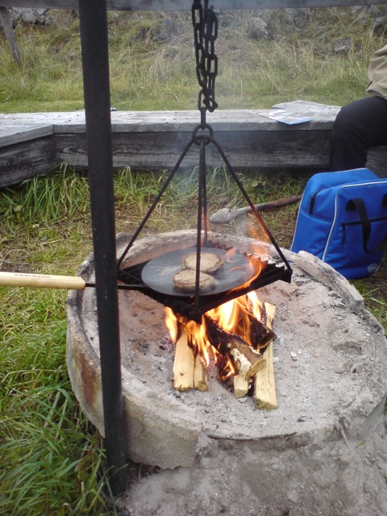
Här steks hamburgare vid eldplatsen vid Risön. Foto: Ronny Fredriksson
Vika
Nås enklast på samma sätt som beskrivits för Stormon. Men välj Vika vid vägskälet norr om Karkebo.
Precis i höjd med Vika gård har en mindre parkering iordningställts som rymmer cirka fyra personbilar. Det är således så att man skall parkera här och inte fortsätta med bil efter grinden. Från Vika gård följer man Upplandsleden norrut till den sk ”Risbergstomten”. Här har det tidigare legat en går. Grunden syns på flera ställen. Här finns även dass och en soptunna för besökare. Risbergstomten ligger vackert vid ängarna. Har finns rastbänkar för att inta fika. Här finns även en pump för vatten. Fortsätter man rakt norrut efter skogsvägen kommer man fram till Vikasjön medan Upplandsleden från Risbergstomten går västerut mot Stormon och Risön.
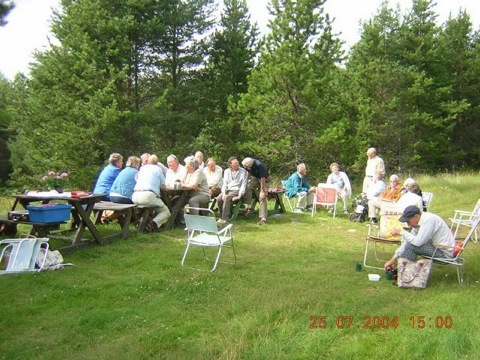
Fika i samband med friluftsgudstjänst vid rastplatsen Vika/Risbergstomten. Närmast till höger är mammas farbror Holger. Foto: Ronny Fredriksson
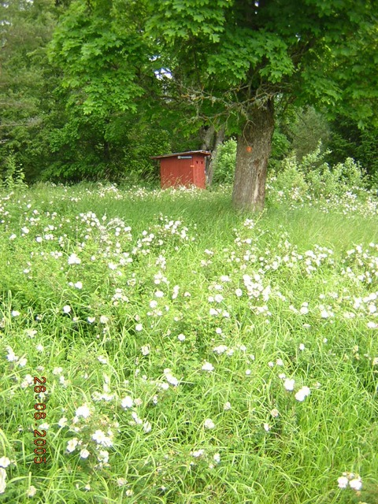
Risbergstomten blommar med dasset i bakgrunden. Foto: Ronny Fredriksson
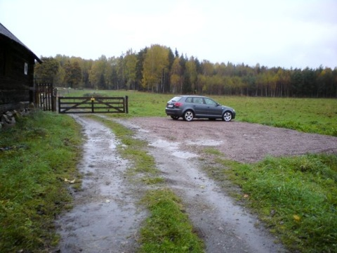
Parkeringen vid Vika gård på den tiden jag körde Audi, Foto: Ronny Fredriksson
Risön
Risön nås enklast om du kommer från riksväg 76 vid Lövstabruk och tar mot Örbyhus/Tegelsmora. När du kommer till byn Ingstarbo finns skyltning till vänster vidare mot Florarna och Risön. Kommer du från Örbyhus/Tegelsmora så kör du mot Lövstabruk till byn Ingstarbo där skylt till höger visar mot Florarna och Risön.
Risön är inte bara en lägergård, det är också en omtyckt rastplats för dem som går varvet runt via Upplandsleden västra och östra sträckning från Stormon. Vid Risön finns en parkering för ett 10-tal bilar. Här finns dass och soptunnor för besökare. Här finns också en öppen övernattningsstuga med två britsar ett bord och några stolar i den sk västra källarboden. Källarboden har el, elbelysning samt elvärme. Sommartid finns även en vattenkran på utsidan av lägergårdens dusch- och toaletthus (låst). Skall man ha vatten vintertid, tidig vår eller sen höst hänvisas till pumpen vid tillsynsmannatorpet Västergärdet som ligger en halv kilometer västerut. Notera dock att det inte finns några garantier för vattnets duglighet som dricksvatten, men det brukar vara fungera utan magåkommor.
Vid Risön finns även en eldplats och Länsstyrelsen håller med ved.
Upplandsleden går ut från Risön i tre riktningar: Lövstabruk - Vika (Stormon) - Stormon. Från Risön går även en kortare led kallad ”Hagels runda” ut. Den är bara ett par kilometer lång och går bla via tillsynsmannatorpet Västergärdet. Den kallas Hagels runda efter den tidigare tillsynsmannen Holger Hagel. Se sidan om leder och stigar.

Stugan i mitten är västra källarboden och öppen för övernattning. Foto: Ronny Fredriksson
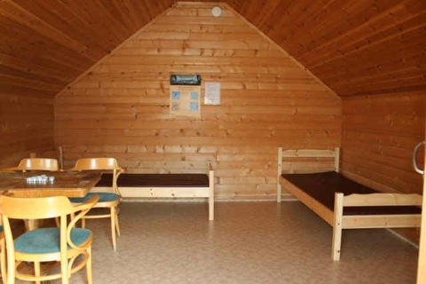
Inredning i västra källarboden på Risön. Foto: Ronny Fredriksson
Norrbergskojan
Att ta sig till Norrbergskojan på vintern kan vara vanskligt med tanke på att isar alltid är en risk. Men om isarna är säkra är det den enklaste vägen över Vikasjöns is från endera parkeringen vid Stormon och de frusna myrhalsarna fram till Staffans holmen och därefter över isen till Norrbergsudden och stugan. Alternativt från parkeringen vid Vika gård och gå skogsvägen norrut till båtlänningen vid Vikasjön och sedan över isen till Norrbergsudden.
Är myrar, åar och sjöar rejält frusna går det också bra att ta sig ner till Norrbergskojan från Risön.
Ligger nästan längst västerut på Norrberget. På den udde Norrberget här utgör i Vikasjön. Användes ursprungligen som en fiskekoja men blev efter reservatsbildningen 1976 en öppen rastkoja för allmänheten. Finns två britsar och ett bord. Men är man lite händig går det att göra om även bordet till sovplats så att man kan få plats med tre sovande i kojan. Det finns en liten kamin och Länsstyrelsen håller med ved. Tyvärr finns inget dass. Vilket gör att man får sitta på en pinne i skogen om sådana behov uppstår.
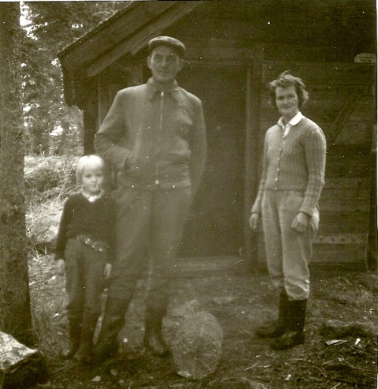
Min mamma Britt-Marie, min morfar Åke Hagel och min mormor Vera Hagel vid Norrbergskojan på 40-50 talet. Foto: Sven ”Lymern” Eriksson
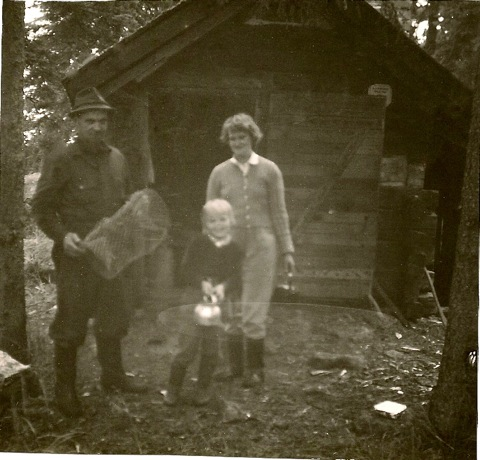
Sven ”Lymern” Eriksson, Britt-Marie och Vera med kräftmjärde vid Norrbergskojan. Foto: Åke Hagel
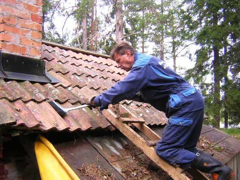
Jag och min pappa, Åke Fredriksson, ser över Norrbergskojans tak. Foto: Ronny Fredriksson
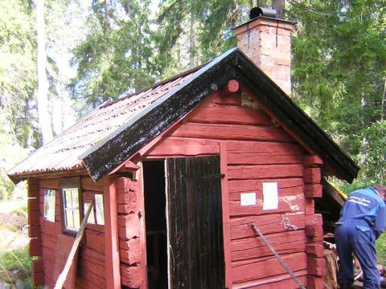
Nytjärade vindskivor och dörr. Foto: Ronny Fredriksson
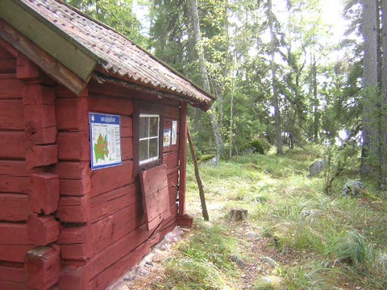
Utsidan på Norrbergskojan. Foto: Ronny Fredriksson
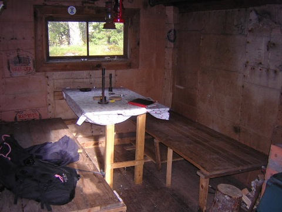
Inredning med bord och två britsar i Norrbergskojan. Foto: Ronny Fredriksson
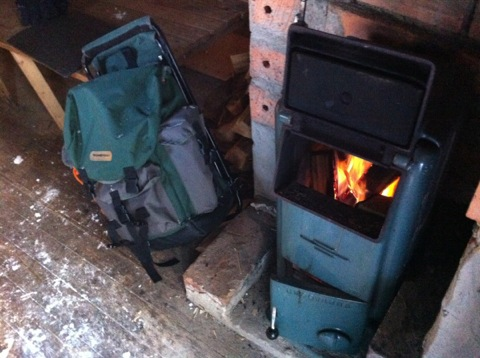
Den gamla Husqvarna kaminen i Norrbergskojan. Foto: Ronny Fredriksson
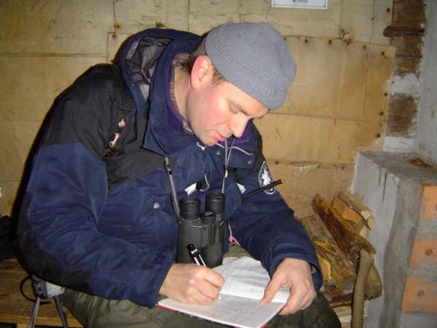
Jag skriver i gästboken i Norrbergskojan.
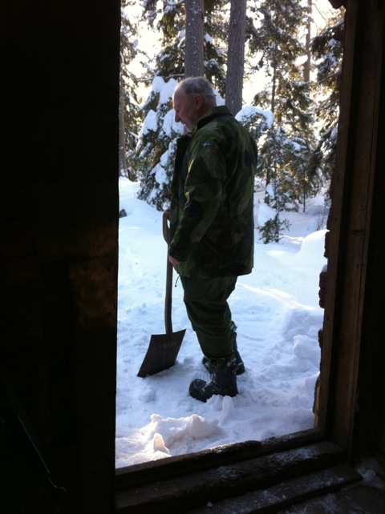
Norrbergsgubben, Hasse, skottar snö utanför Norrbergskojan. Foto: Ronny Fredriksson
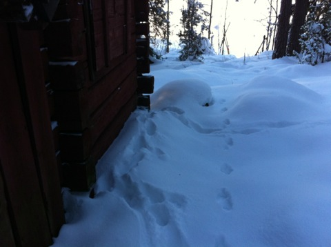
Spåren närmast väggen är från ett lodjur som undersökt Norrbergskojan. Nyårsafton 2010. Foto: Ronny Fredriksson
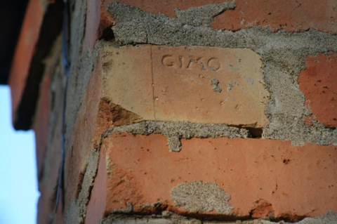
Noterade att teglet i skorstenen på Norrbergskojan tydligen kommer från Gimo. Foto: Ronny Fredriksson
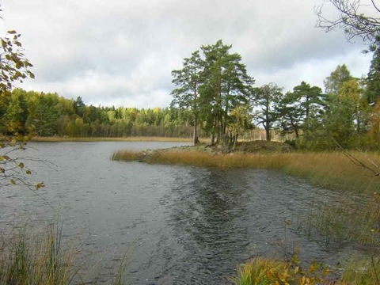
Norrbergsudden i Vikasjön. Norrbergskojan ligger i skogen upp till höger. Foto: Ronny Fredriksson
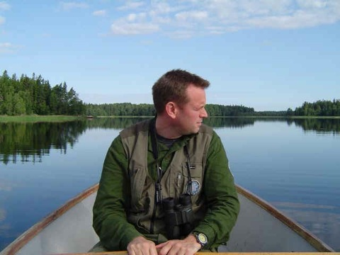
Jag i båt på Vikasjön. Norrberget syns i högerkant. Foto: Alexander Holst
Brändöns kolarkoja
Om du parkerar bilen vid Risön och går vägen mot tillsynsmannatoret Västergärdet och den västra sträckning av Upplandsleden kan du komma till Brändöns kolarkoja genom en ganska lätt vandring. Huvuddelen av leden går på en skogsväg som byggdes för att ta ut timmer vid avverkningarna. Som tur var skapades reservatet innan större delen av skogen avverkades. Först passeras det fina tillsynsmannatorpet som var utgångspunkt för naturreservatets tillsynsmän längre tillbaks. Sedan följder du Upplandsleden tills en vägvisare in på en stickväg, visar mot ”Kolarkojan”. Följ stickvägen till dess slut där en vitmarkerad stig fortsätter. Efter någon kilometers ytterligare vandring kommer du fram till Brändöns kolarkoja och den intilliggande gamla kolbotten (resterna efter en sk kolmila). Vid kolbotten finns en informationstavla om kollningen.
Vid kolarkojan finns en yttre eldplats med sittstockar, det finns ett vedskjul och det finns ett dass.
I själva Kolarkojan finns två britsar, ett bord och en eldstad.
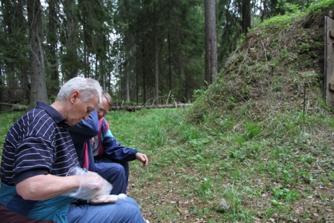
Min moster Ann-Britt och hennes man Tage vid Kolarkojan 20 maj 2012. Foto: Ronny Fredriksson
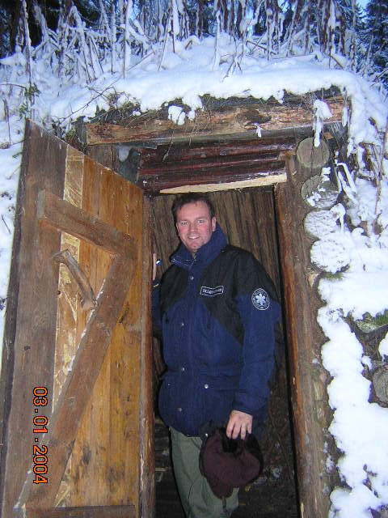
Jag i dörren till Kolarkojan. Foto: Alexander Holst
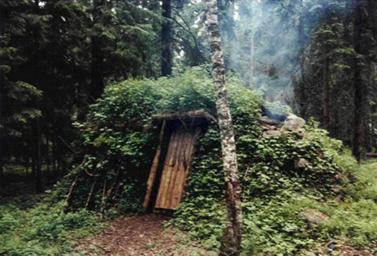
Kolarkojan på 1980-talet. Foto: Ronny Fredriksson
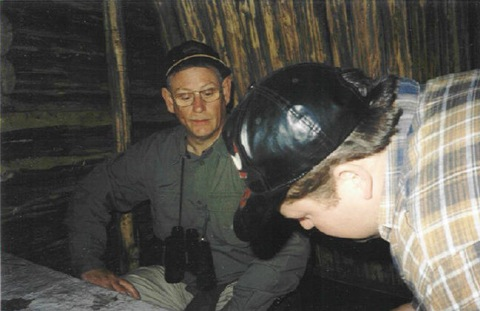
Inne i Kolarkojan. Mikael närmast kameran var en av mina släktingar. Han gick tyvärr gått bort alldeles för tidigt. Foto: Ronny Fredriksson
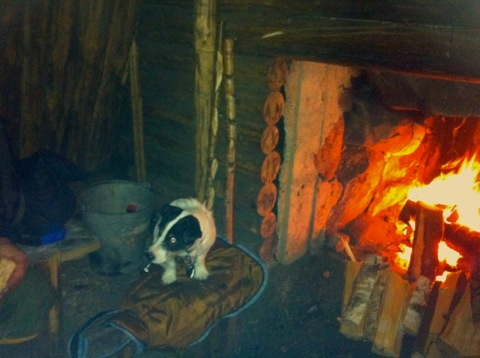
En sprakande brasa i eldstaden Kolarkojan. Foto: Ronny Fredriksson
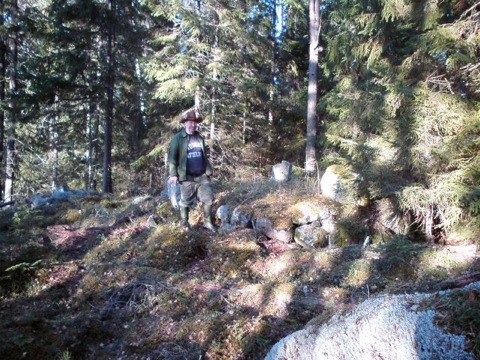
Femstenaröret är gränsröset där Tegelsmora-, Österlövsta- och Films socknar möts. Det ligger en bit SV om Brändöns kolarkoja. Foto: Ronny Fredriksson
Agnsjöstugan
En klassisk övernattningstuga för Fältbiologer, Friluftsfrämjare och ornitologer genom åren är Agnsjöstugan. Belägen på Lilla Agnsjöns västra strand. Mitt i storskogen och med Dikesmyren i norr och nordväst.
Sommartid är det enklast att börja vandringen vid bommen på skogsvägen vid Labbo. Efter en bra bits vandring passerar du jaktkojorna vid Slätmossen/Fågelsmossen (stickväg rak fram) och väger kröker ordentlig till vänster, efter nästa ordentliga krök till höger är det bara ett hundratal meter till den plats där den gamla ”sten-på-sten stigen” eller Agnsjöstigen börjar. Stigen går upp till vänster om vägen (som fortsätter). Tidigare var stigen enbart markerad med stenar som låg på stenar, vilket är en fin tradition, idag är den också uppvräkt med orange markeringar på träd och stenar efter stigen. Stigen tar slut vid Agnsjöstugan.
Längre tillbaks gick en sommarstig till Agnsjöstugan även från västra vägänden vid Sibbo (skogsvägen) först till Stora Agnsjöns östspets sedan följde den södra sidan av stora och lilla Agnsjöarna för att komma fram till Agnsjöstugan. Dock har stigen idag till stora delar försvunnit.
Vintertid åkte alltid de äkta vännerna av Florarna skidor från Labbo - via Labbos ängar åt norr - vid slutet av ängarna började vintervägen till Lilla Agnsjön - först genom ett skogsparti, sedan via myren Långängen…sedan genom nästa skogsparti och sedan ner på den västliga spetsen av Dikesmyren. Sedan följde den dikesmyrens södra kant fram till Lilla Agnsjön.
Idag har tyvärr denna fina tradition om att åka hela vägen från Labbo fallit i glömska eller fallit för bekvämligheten. Tyvärr är ofta skogsvägen frän Labbo plogad vintertid och bommen öppen eller olåst vilket gör att de bekväma kör bil hela vägen till vägänden där de lastar ur sina skidor och glider någon kilometer bara så är de på södra spetsen av Lilla Agnsjön. Fusk! Men det är givetvis upp till var och en.
Vintertid går det också att åka till sista gården i Sibbo och efter tillstånd av gårdsinnehavaren parkera för att sedan åka skidor norrut efter skogsvägen och sedan följa den gamla vintervägen till Stora Agnsjön och korsa den på isen, kontrollera först att den är säker….sedan åka via myrhalsen mellan Stora och Lilla Agnsjön för att sedan korsa dess is (kontrollera först att den är säker) för att nå Agnsjöstugan på västra stranden.
Notera att det inte finns några officiella leder som underhålls av Länsstyrelsen till Agnsjöstugan. Det kräver kunskap om att använda GPS alternativt karta och kompass. För oss som rör oss mycket i området handlar det givetvis om lokalkännedom. Att gå på ovanstående schematiska beskrivningar går inte utan friluftsvana.
Agnsjöstugan har fyra fasta britsar. Ett bord och två bänkar. En kamin i stora rummet och en i förrummet. Det finns dass och det finns ved som ombesörjs av Länsstyrelsen. Det finns förutom sjön även en källa precis mellan stugan och sjön. Jag ger dock inga garantier för vattenkvalitén. Jag har överlevt att dricka vattnet direkt. Men koka det för säkerhets skull.
I stugans närhet finns möjlighet att se och höra bla sparvuggla, pärluggla, slaguggla och tretåig hackspett om man har mycket tur. Lodjurens spårstämplar är inte helt ovanliga i omgivningarna. Läs mer på sidorna om Djurliv - fåglar och Djurliv - däggdjur.

Fullt hus vid Agnsjöstugan. Foto: Ronny Fredriksson
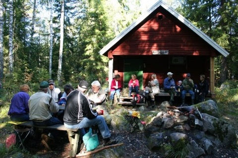
Tegelsmora Hembygdsförening på besök vid Agnsjöstugan. Foto: Ronny Fredriksson
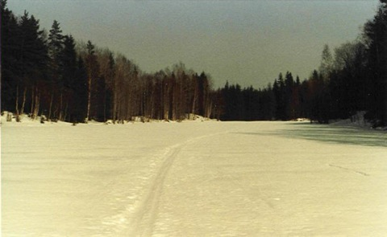
Så här såg det ut när skidåkningen startade vid Labbo. Foto: Ronny Fredriksson
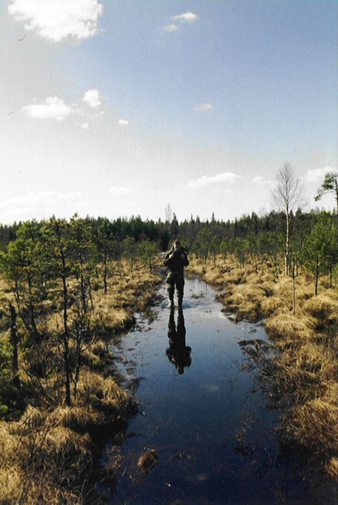
Jag är på väg över Dikesmyren på vintervägen till Agnsjöstugan våren 1992. Foto: Torbjörn Löf

Kamraten Torbjörn och jag skriver i gästboken vid Agnsjöstugan. Foto: Ronny Fredriksson
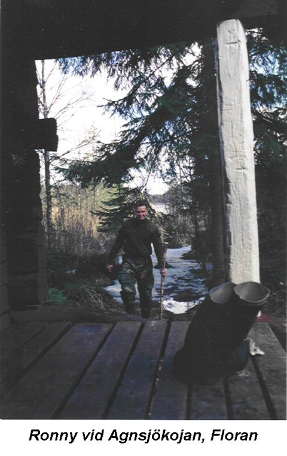
Värst vad jag ser glad ut….Foto: Torbjörn Löf
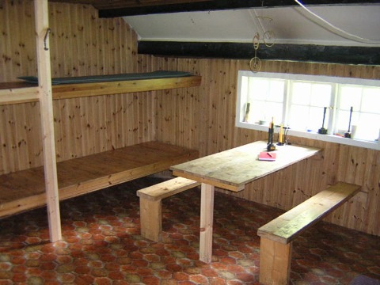’
Inne i Agnsjöstugan. Foto: Ronny Fredriksson

Källan vid Agnsjöstugan. Ibland brukar en stor padda ligga i den. Foto: Ronny Fredriksson

Lilla Agnsjön mot norr, vinterskymning. Foto: Ronny Fredriksson
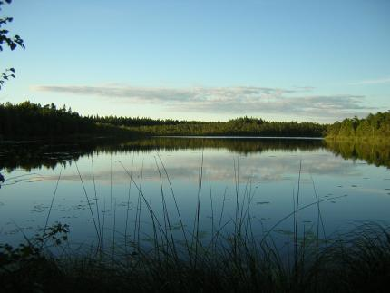
Lilla Agnsjön mot norr, sommarskymning. Foto: Ronny Fredriksson
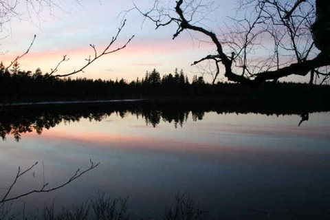
Stora Agnsjön, vårskymning. Foto: Ronny Fredriksson
Gullstigens kolarkoja
Efter leden Gullstigen ligger en kolarkoja. Den är uppbyggd på initiativ av Tegelsmora hembygdsförening. Två britsar, ett bord och en eldstad. Inget dass och ved får man ordna själv. Den ligger på skogen inte så långt från Gullstigens startpunkt vid Labbo.

För ett antal år sedan ordnade Tegelsmora Hembygdsförening en trevlig dag vid Gullstigen kolarkoja med information om kollningen. Har syns en av hembygdsföreningens kolare berätta om uppbyggnaden av en kolmila framför kolarkojan. Foto: Ronny Fredriksson
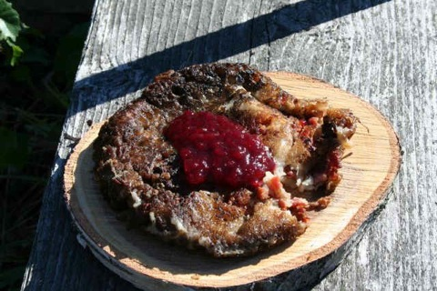
Kolbulle med lingonsylt. Garanterat gott. Foto: Ronny Fredriksson
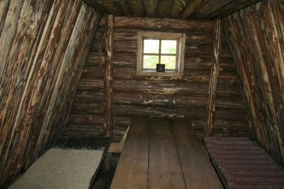
Inne i Gullstigens kolarkoja. Två britsar och ett bord samt ett litet fönster. Foto: Ronny Fredriksson
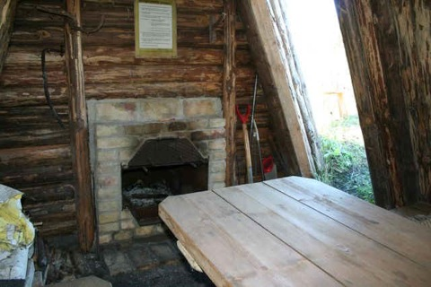
Eldstaden och dörren i Gullstigens kolarkoja. Foto: Ronny Fredriksson
Storön i Finnsjön
En underbart härlig rastplats om man är i Florarna med kanot/båt är Finnsjöns största ö, som då givetvis heter Storön. Storön är en historisk plats. Vid rysshärjningarna i Norduppland under början av 1700-talet gömdes Lövstabruks kyrkklocka och kyrksilver här enligt berättelserna. Enligt andra berättelser så grävde Ingstarbobönderna ner sina dyrgripar på ön för att inte ryssen skulle plundra allt.
Enligt uppgift har ön genom århundradena varit besökt av skattsökare….om någon hittat något är okänt.
På nordvästra delen av ön ligger en iordningställd rastplats med eldstad och stockbänkar. Paddlare brukar ofta tälta på denna plats. Det finns även ett litet vedskjul i korrugerad plåt vid rastplatsen. Vem som sköter detta är för mig okänt. Någon som vet ? Mejla gärna.
Möjlighet till bad finns för den som paddlat mycket och är varm. I anslutning till rastplatsen står några tallar av ganska imponerande ålder. Vid inventering på av Uppsala Naturskyddsförening på Storön hittades följande intressanta arter: ormbär, tibast, långfliksmossa, stubbspretmossa, grovticka, kandelabersvamp och tallticka.
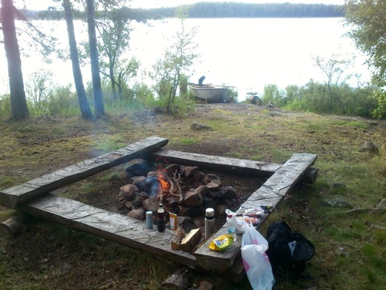
Rastplatsen på Storön, Finnsjön den 12 augusti 2012. Foto: Ronny Fredriksson
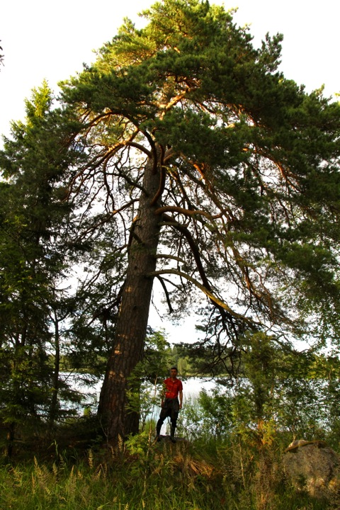
En av de mycket gamla tallarna på Storön den 21 juli 2012. Foto: Ronny Fredriksson
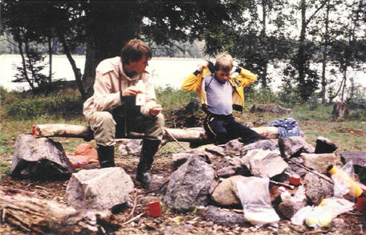
Jag och Erik Gotborn på Storön vid paddling på mitten av 1980-talet. Foto: Lars Gotborn
Rast- och eldplats Upplandsleden - Finnsjön
På en berghäll vid Finnsjöns strand utefter Upplandsleden finns sedan några år tillbaks en iordningställd rastplats med en bänk, en vedlår och en eldstad. Den är belägen på Finnsjöns västra strand i höjd med ön Storön i Finnsjön.
Rastplatsen ligger vid Upplandsleden och är lätt åtkomlig även med kanot/båt från sjösidan.
Personligen tycker jag denna rastplats är en av Florarna områdets vackrare. Med vy över sjön och skogen inpå. Här ligger också resterna av ett antal gamla ekor. Strax väster om rastplatsen står ett par imponerande tallar intill stranden. Runt midsommar är det vackra solnedgångar här.
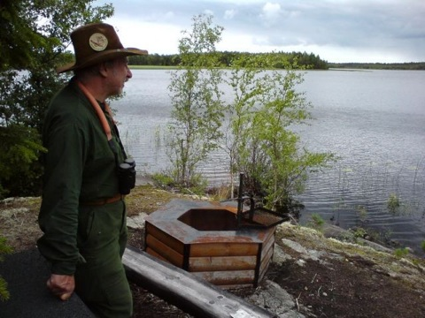
Foto: Ronny Fredriksson
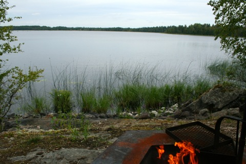
Foto: Ronny Fredriksson
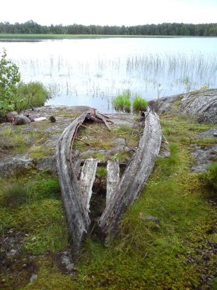
En gammal eka. Foto: Ronny Fredriksson